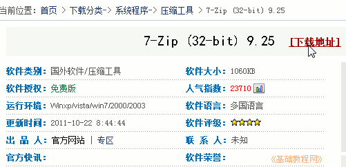
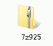
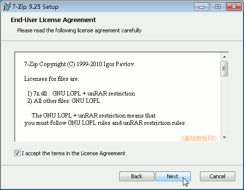
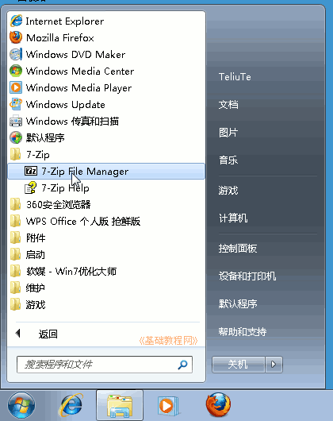
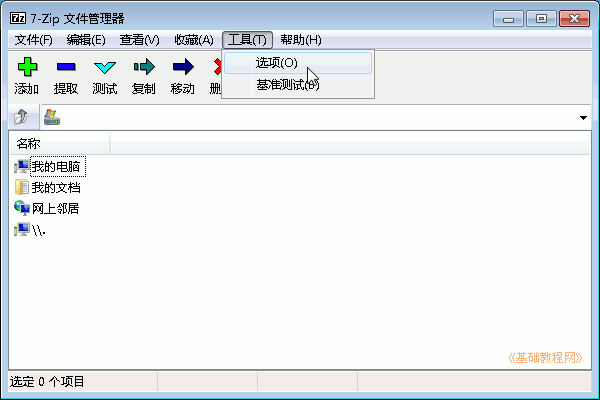
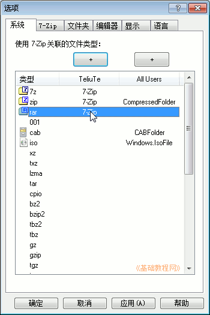
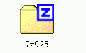
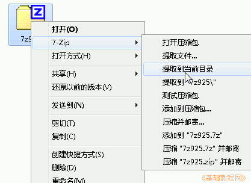
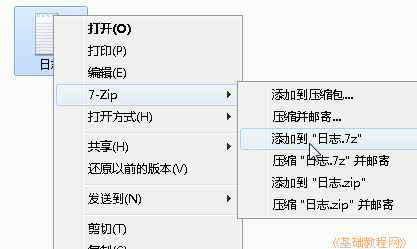

Windows7 基础入门教程
作者：TeliuTe 来源：基础教程网
二十八、安装压缩软件 返回目录 下一课网上下载的软件大都是压缩包，需要用压缩软件来解压；
1、安装压缩软件
1）华军下载 http://www.onlinedown.net/soft/35401.htm ，或者在网络搜索中输入“7-zip 下载”，下载 7-zip 压缩软件；

2）双击下载的7-zip软件，进入安装界面，出来安全警告时，点“运行”或“是”；

3）在出来的安装界面点“Install”，打勾“I accept”我同意，点 Next 继续直到 Finsh 完成；

4）点“开始－所有程序－7-zip－7-zip”，打开程序窗口；

5）点菜单“工具－选项”命令，出来选项对话框；

6）在对话框中间一列，依次点击前四行中间空白，添加用 7-zip 打开，点“确定”完成，压缩包会显示成7z图标；
 
2、压缩和解压文件
1）在压缩包上点右键，选择“7-zip－提取到当前目录”，可以解压缩文件；

2）在一个文件上点右键，选择“7-zip－添加到"文件.7z"”，可以压缩文件；

本节学习了安装压缩软件的基础知识，如果你成功地完成了练习，请继续学习下一课内容；
本教程由86团学校TeliuTe制作|著作权所有
基础教程网：>http://teliute.org/
美丽的校园……
转载和引用本站内容，请保留版权信息和本站链接。